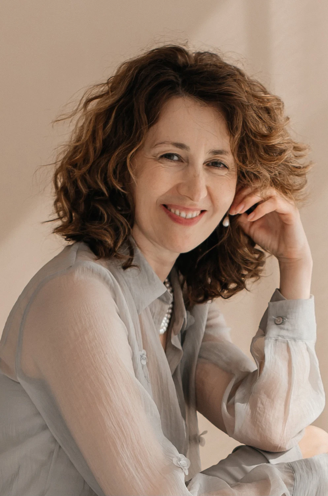

ПЕРМЬ И ОНЛАЙН
Быть собой.
Быть в близости.
Место для разговора о себе, своих чувствах и отношениях с другими.
Написать Ирине в VK ↗Первый шаг — обычное сообщение.
Можно начать с того, что волнует сейчас.

01 / О ЧЁМ МОЖНО ГОВОРИТЬ
Чувствам можно дать местоЧто сейчас
отзывается вам?
Не обязательно сразу находить точные слова. Можно начать с ощущения.
ТЕМА / 01
Быть рядом.
И оставаться собой.
Трудно говорить о своих желаниях? Близость чередуется с дистанцией? Отношения могут стать отправной точкой разговора о том, как вы встречаетесь с другим человеком.
02 / ФОРМАТЫ РАБОТЫ
Личный разговор.
Опыт встречи.
Индивидуально или в группе —
у каждого формата своя глубина.
Индивидуальная терапия
Разговор один на один, в котором есть время исследовать свой опыт, чувства и отношения.
Терапевтические группы
Тематические и динамические группы. Возможность исследовать себя в контакте с другими участниками.
Формат, стоимость, длительность встреч и свободное время обсуждаются лично.
03 / ОБО МНЕ
Ирина
Суморока
Психолог, гештальт-терапевт. Работаю индивидуально и веду терапевтические группы.
В профессиональном фокусе — индивидуальная длительная терапия, отношения в паре и семье, взаимодействие родителей и детей, групповая работа.
Профессиональные сведения — из открытого профиля МГИ.
Посмотреть профиль специалиста ↗04 / ПЕРЕД ПЕРВЫМ СООБЩЕНИЕМ
Можно
спросить.
Не знаю, как сформулировать запрос+
Можно написать своими словами: что происходит сейчас, что беспокоит или что хотелось бы обсудить. Не обязательно заранее составлять точный запрос.
Возможны ли онлайн-встречи?+
Да, в профессиональном профиле Ирины указана индивидуальная терапия онлайн и очно в Перми. Подходящее время и детали можно уточнить в личных сообщениях.
Как узнать стоимость и свободное время?+
Напишите Ирине в VK. Актуальные условия и расписание обсуждаются лично; на этой демонстрационной странице они не публикуются.
Сейчас идёт набор в группу?+
Наличие мест и темы ближайших групп нужно уточнить у Ирины. Опубликованные ранее анонсы не означают, что набор продолжается сейчас.
ПЕРВЫЙ ШАГ
Разговор начинается
с простого «здравствуйте».
Написатьв VK ↗
Расскажите немного о себе или задайте вопрос о встречах.